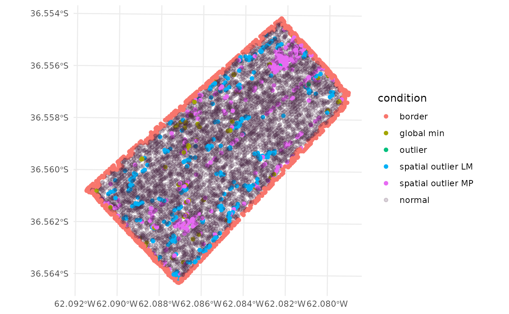

Usually, yield data comes with many noisy observations. This vignette
will show how to preprocess yield data to remove both, spatial and
global outliers. The protocol for error removal follows the protocol
proposed by Vega et al. (2019). Functions
from this package are used in FastMapping software (Paccioretti, Córdoba, and Balzarini 2020). For
the tutorial we will use the barley dataset that comes with
the paar package. The barley data contains
barley grain yield which were obtained using calibrated commercial yield
monitors, mounted on combines equipped with DGPS. The data is not a
sf object format. We will convert it to an sf
object first.
First, we will load the paar package, the
sf package for spatial data manipulation,
ggplot2 for plotting, and the barley dataset
that comes with the paar package.
library(paar)
library(sf)
#> Linking to GEOS 3.10.2, GDAL 3.4.1, PROJ 8.2.1; sf_use_s2() is TRUE
require(ggplot2)
#> Loading required package: ggplot2
data("barley", package = 'paar')The barley dataset is a data.frame object.
We will convert it to a sf object using the
st_as_sf function. The coords argument
specifies the columns that contain the coordinates. The crs
argument specifies the coordinate reference system. The
barley dataset is in UTM zone 20S.
The barley_sf object is now an sf object.
We can plot the data to visualize the yield data.
- The
plotfunction can be used to plot the data.
plot(barley_sf["Yield"])- The
ggplot2package can be used to plot the data.
ggplot(barley_sf) +
geom_sf(aes(color = Yield)) +
scale_color_viridis_c() +
theme_minimal()Let’s see the yield values distribution.
- The
histfunction can be used to plot the histogram.
hist(barley_sf$Yield, main = 'Yield values distribution')- The
ggplot2package can be used to plot the histogram.
ggplot(barley_sf) +
geom_histogram(aes(x = Yield)) +
theme_minimal()
#> `stat_bin()` using `bins = 30`. Pick better value with `binwidth`.
The protocol proposed by (Vega et al.
2019), is implemented in the function depurate and
consists of three steps: 1. Remove border observations (edges).
2. Remove global outliers (outliers). 3. Remove spatial
outliers (inliers).
The depurate function takes an sf object as
input and returns an object of class paar. Any combination
of the three steps can be done using the depurate function.
The argument to_remove specifies which steps to perform.
The argument y specifies the column name of the variable to
be cleaned. A field boundary is necessary to remove the edges
observations. If a polygon is not provided in the
poly_border argument, the function will make a hull, around
the data and remove the observation that are 10m from the hull. The hull
is made using concaveman::concaveman function if the
package is installed, otherwise, the sf::st_convex_hull
function is used.
barley_clean_paar <-
depurate(barley_sf,
y = 'Yield',
toremove = c("edges", "outlier", "inlier"))
#> Concave hull algorithm is computed with
#> concavity = 2 and length_threshold = 0Summary of the cleaning process
The depurate function returns an object of class
paar. The paar object contains the cleaned
data ($depurated_data), and the condition of each
observation ($condition). If the condition is
NA means that the observation was not removed.
barley_clean_paar
#> Depurated data has 5673 rows.
#> The process removed 23% of original data.
#>
#> $depurated_data
#> Simple feature collection with 5673 features and 1 field
#> Geometry type: POINT
#> Dimension: XY
#> Bounding box: xmin: 581322.1 ymin: 5953094 xmax: 582393.3 ymax: 5954175
#> Projected CRS: WGS 84 / UTM zone 20S
#> First 3 features:
#> Yield geometry
#> 3 2.566069 POINT (582393.3 5953877)
#> 36 3.217464 POINT (582373.4 5953843)
#> 37 2.651020 POINT (582375.7 5953846)
#>
#>
#> $condition
#> vector of length 7394. First 3 elements:
#> [1] "border" "border" NAThe summary function can be used to get a summary of the
percentage of considered ouliers and the number of observations removed.
The summary function returns a data.frame
object.
summary_table <- summary(barley_clean_paar)
summary_table
#> normal point border spatial outlier MP spatial outlier LM
#> 5673 (77%) 964 (13%) 343 (4.6%) 309 (4.2%)
#> global min outlier
#> 99 (1.3%) 6 (0.081%)Filtered dataset can be extracted from the paar object
using the $depurated_data
barley_clean <- barley_clean_paar$depurated_dataFinal Yield values distribution can be plotted.
- The
plotfunction can be used to plot yield values.
plot(barley_clean["Yield"])- The
ggplot2package can be used to plot yield values.
ggplot(barley_clean) +
geom_sf(aes(color = Yield)) +
scale_color_viridis_c() +
theme_minimal()
A comparison can be made between the original data and the cleaned data.
- Original data
ggplot(barley_sf) +
geom_sf(aes(color = Yield)) +
scale_color_viridis_c() +
theme_minimal()
- Cleaned data
ggplot(barley_clean) +
geom_sf(aes(color = Yield)) +
scale_color_viridis_c() +
theme_minimal()
Also, the distribution of the yield values can be compared.
- Original data
ggplot(barley_sf, aes(x = Yield)) +
geom_histogram()
#> `stat_bin()` using `bins = 30`. Pick better value with `binwidth`.- Cleaned data
ggplot(barley_clean, aes(x = Yield)) +
geom_histogram()
#> `stat_bin()` using `bins = 30`. Pick better value with `binwidth`.Plotting the condition of each observation
The condition of each observation can be combined to the original
data using the cbind function. The paar object
must be used as first argument in the cbind function.
barley_sf <- cbind(barley_clean_paar, barley_sf)The barley_sf object now contains the condition of each
observation. The condition column contains the condition of
each observation. The condition can be NA if the
observation was not removed, edges if the observation was
removed in the edges step, outlier if the
observation was removed in the outliers step, and
inlier if the observation was removed in the
inliers step. Results can be plotted to visualize the
observations.
- The
plotfunction can be used to plot the condition of each observation.
plot(barley_sf[,'condition'], col = as.numeric(as.factor(barley_sf$condition)))
legend("topright", legend = levels(as.factor(barley_sf$condition)), fill = 1:4)- The
ggplot2package can be used to plot the condition of each observation.
ggplot(barley_sf) +
geom_sf(aes(color = condition)) +
scale_fill_viridis_d() +
scale_color_discrete(
labels = function(k) {k[is.na(k)] <- "normal"; k},
na.value = "#44214234") +
theme_minimal()